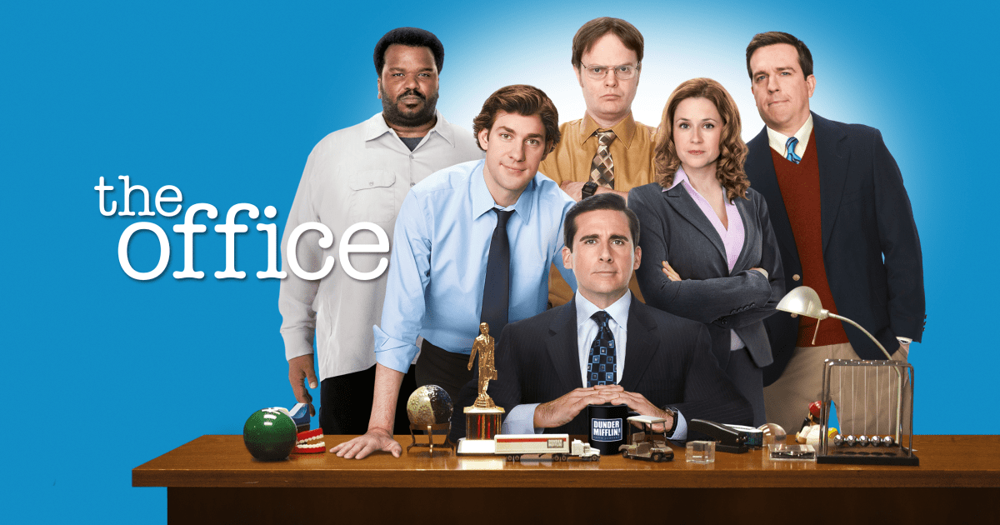

A série acompanha a rotina dos funcionários da filial da Dunder Mifflin, mostrando desde crises profissionais até situações pessoais, com foco no gerente regional Michael Scott, cuja personalidade egoísta, imatura e centralizadora gera situações cômicas e constrangedoras, mas também momentos de empatia e reflexão. Filmada em câmera única sem plateia ou risadas de fundo, a série simula um documentário real, permitindo que o público sinta que os personagens são pessoas reais sendo observadas em seu ambiente de trabalho.
